Day 1 - The Grounds
March 6th, 2026
First things first, I should document what I can of the grounds.
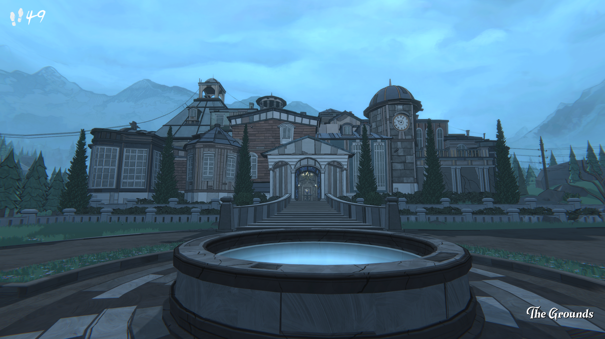
The first thing of note is of course, the well. I can "make a wish" to throw a coin into it while it is filled with water, and my assumption is that I could then pick up those coins later once it is drained.
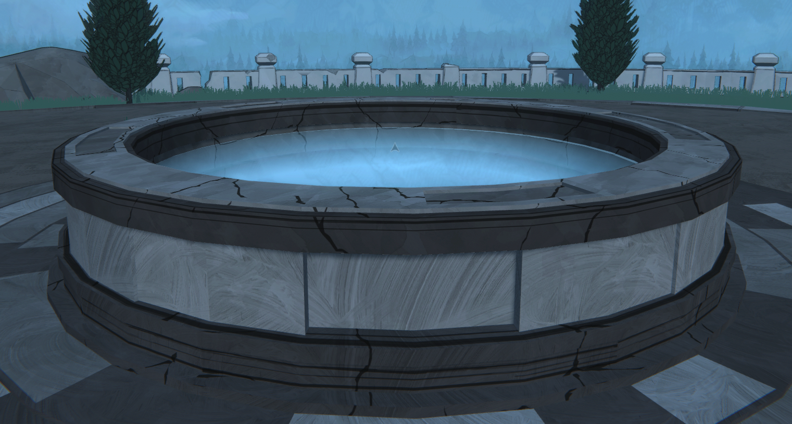
I'll wait to properly document this in my Tome of Knowledge once I've actually drained the water from it.
For now, I should head to the orchard. I already have the neccessary information to unlock it's gate.
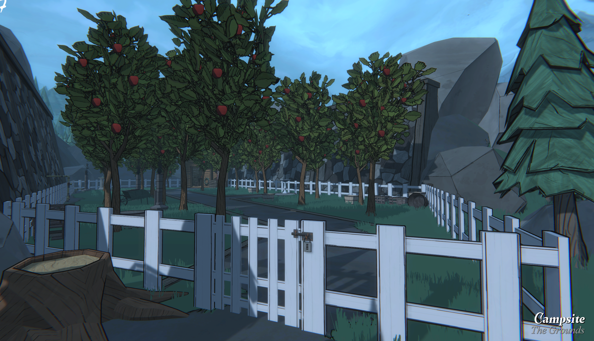
Yknow, I must say I've never really taken in the ambiance of this game quite like I am currently until now. It's a beautiful game. I need to learn to be simply present in games more. Sometimes there's lots to enjoy from simply lingering in a place. Even a virtual one.
As I said previously, I already know the code to the lock on this gate.
You find it out in The Dark Room.
There's a picture that you can only look at while the room is powered, with a date only visible by a magniying glass. ...it's a little curious that the tree was chopped down. Was it done for the sake of the puzzle? Or was it chopped down well before?
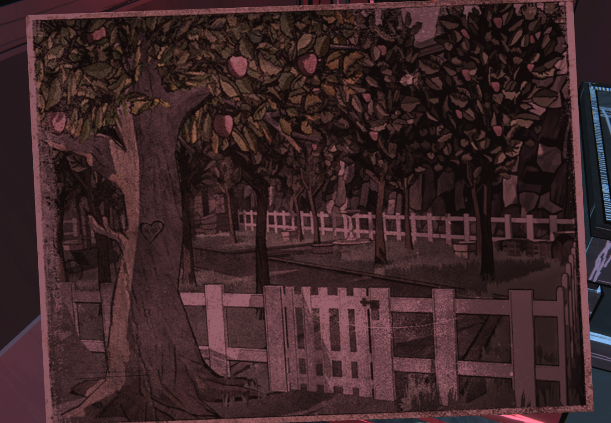
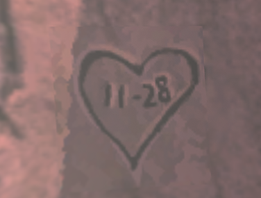
The heart implies a romantic relationship. The dash: a date. Was this tree and the date important to Simon's parents? Did Mr. Jones have a falling out with Mary and its what led to the tree being cut down? Many questions. I wonder if the game holds the answers somewhere.
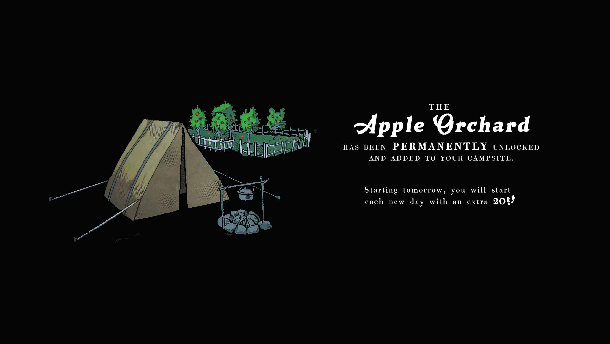
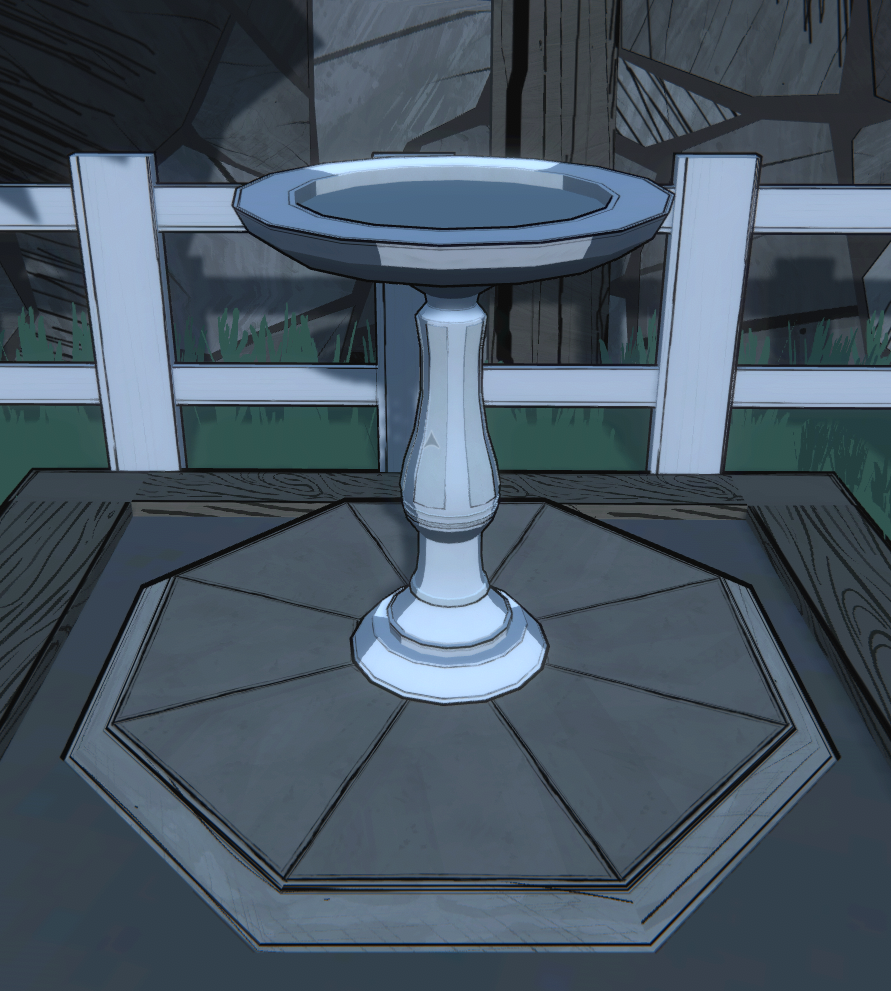
These birdbaths are rather conspicuous and all over the grounds. I'm wondering if I need to eventually count the birds atop them that fly away if you get too close or something.
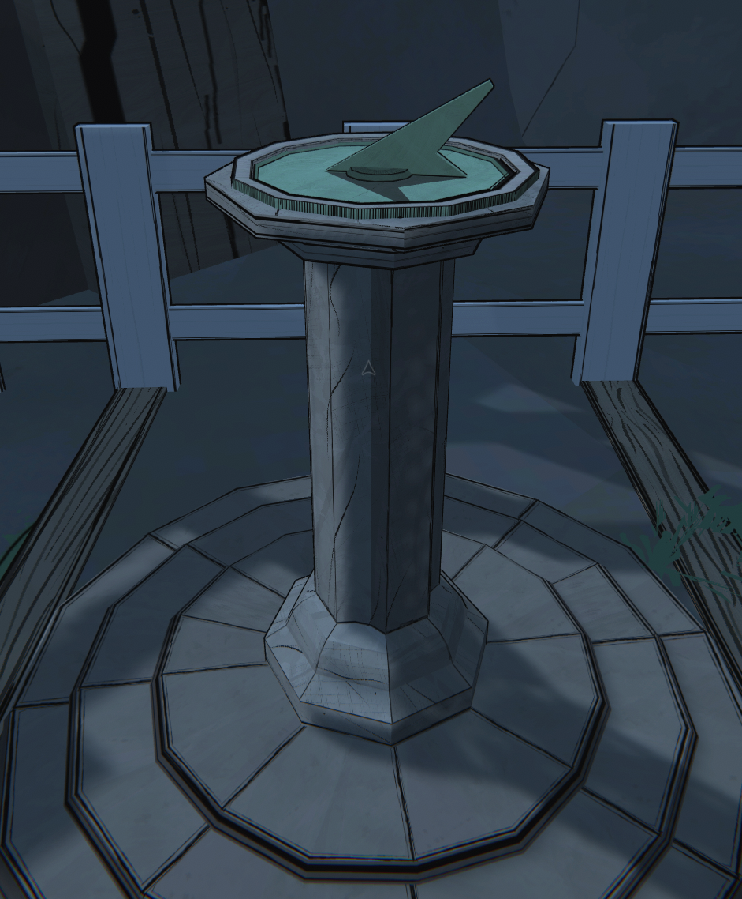
There's also a sundial here. I still don't know what it's for either.
I'll add both of these things to my 'curiosities' list.

As part of my meticulous recordings, I aim to create a database of acquired knowledge. I may also eventually code some sort of UI to go through the information I've collected in a user friendly way. But for right now I just want to make sure I record all the important stuff in an organized fashion.
Moving on, I enter the groundskeeper's shed where I find the Groundskeeper's Log.
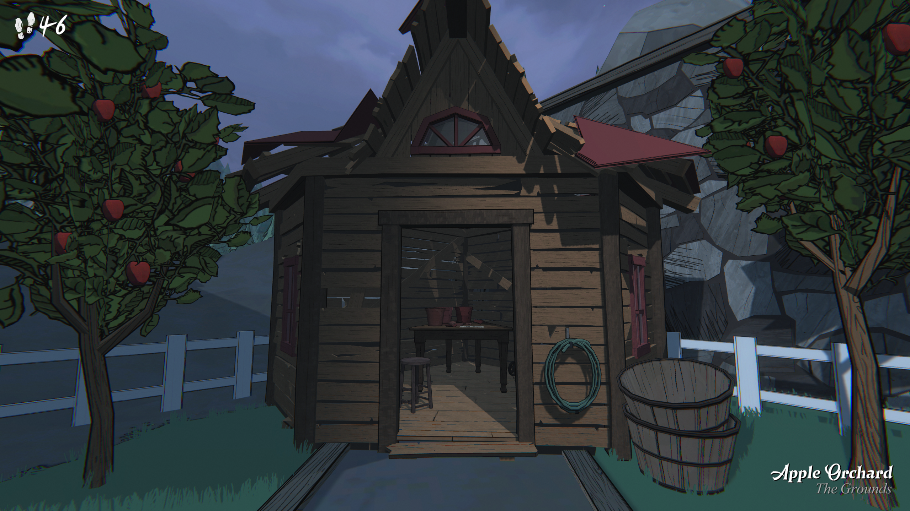
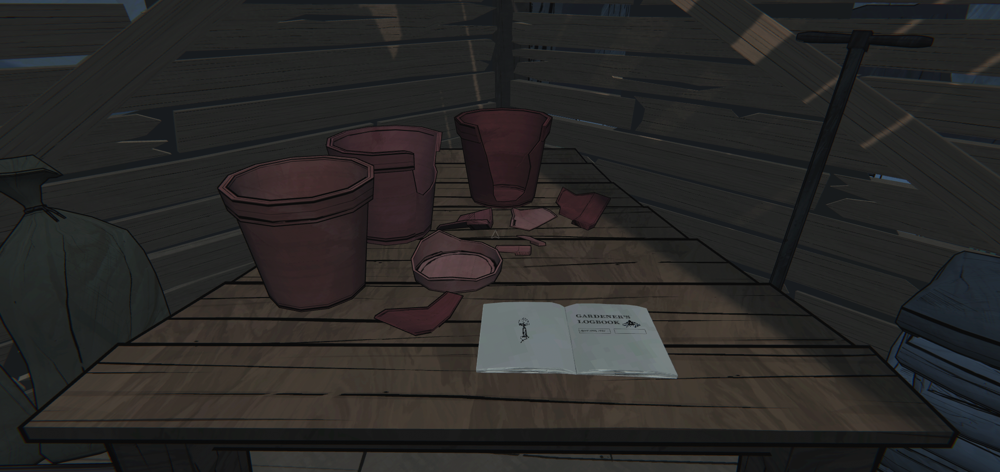
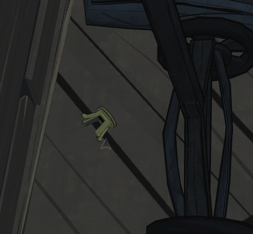
Something I never really thought about until now: Why are all these pots broken? Its not as though the estate was in disrepair. What happened here? Also upon further inspection I noticed an empty gem-holder on the ground beneath the lawn mower. ...it feels like something strange happened in this shed.
After adding these questions to my curiosities page, recording the relevant dates in my dates page, and meticulously documenting every page of the Logbook, I finally leave the Orchard and head back to the campsite to get some pictures.
Before leaving, I turn the valve to redirect the gas from the Orchard to one of the four flames that activate the underground elevator. More on that in a second.
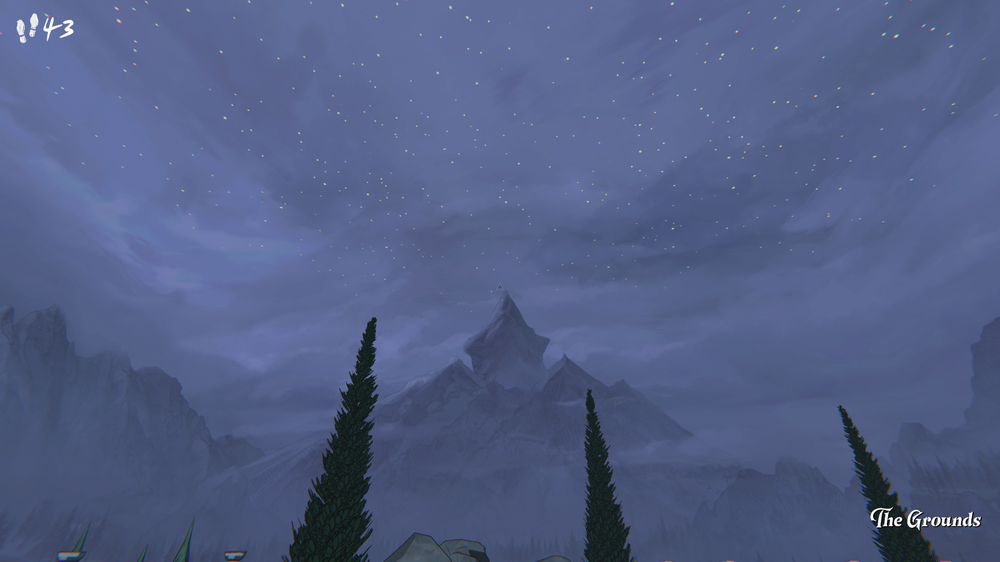
I've been taking so long documenting and journaling that the stars came out...
I didn't even know that could happen! They're so pretty!
Going down some stairs directly in front of the estate leads you to this little section.
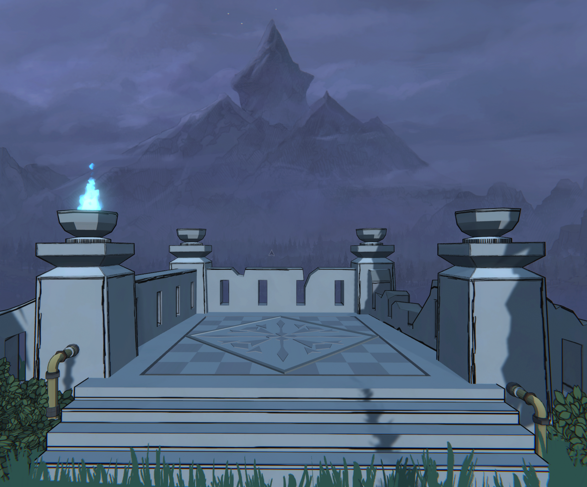
I already know how to activate the remaining 3. It's just a matter of getting the rng neccessary to do it.
Also of note down here is this boarded off passageway:
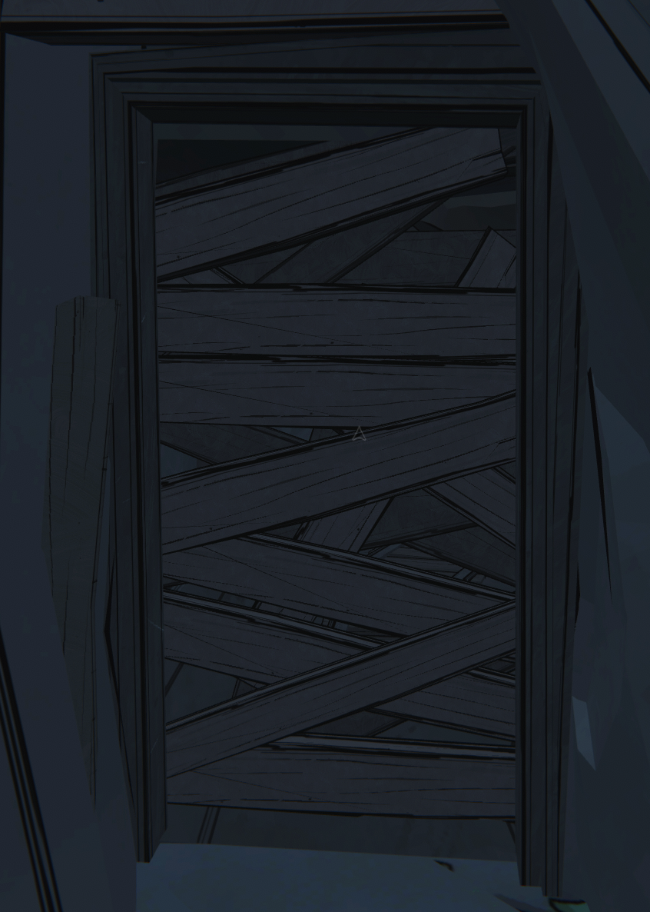
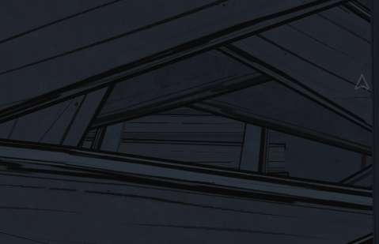
I at one point wondered if you could maybe hammer your way through the boards, but after coming down here with a hammer I was able to verify that was not in fact the case.
It's possible I could use the Power Hammer instead though? Further testing required.
Similarily there is also a passageway in a tunnel to the right, blocked off by boxes.
Of note there are two torches at the blockage point. I do not know if they can be lit by the Burning Glass or not. It's something I certainly need to try at some point.
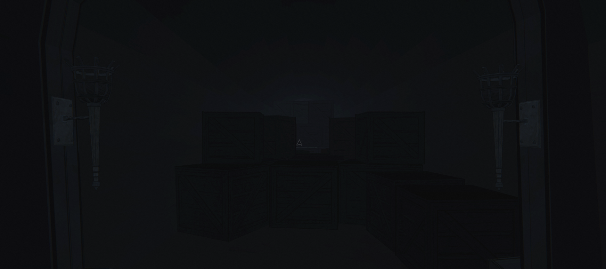
And that more or less finally wraps up the exploration of the grounds, at least until I unlock more of them. Walking inside we're greeted by the entrance hall.
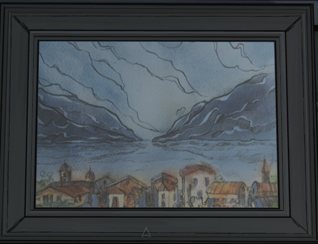
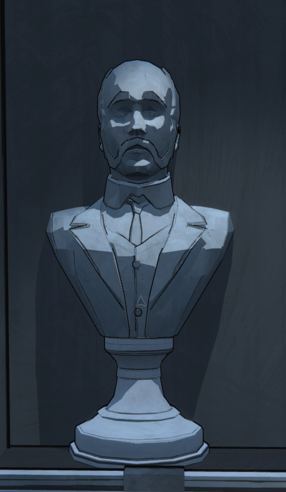
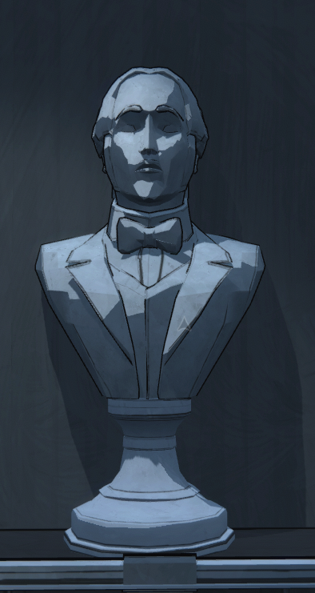
There isn't really much to talk about here. If you're reading this I expect you've already played the game so I don't need to explain any of it to you.
There's a painting of Trinsdale Lake on the right wall. And the northern wall is adorned with two busts of some men. If I locate the Foyer I"ll probably be able to figure out their names.
There's also, of course, the letter to Simon regarding his inheritance. I don't think there's any clues in there, but I screenshotted and documented it anyway.
And so finally, it's time to begin the first run of this file proper. Starting with the eastern door.